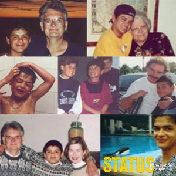

Colombia (Jonatan, Part 1)
This is the Story of Jonatan
Colombia (Jonatan, Part 2)
This week, we’re continuing the story of Jonatan, the man who inspired the creation of Status. This week, hear the story of how Lori & David became Mom & Dad.
This week, we’re continuing the story of Jonatan, the man who inspired the creation of Status. This week, hear the story of how Lori & David became Mom & Dad.